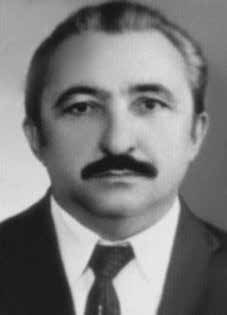

Joaquim
Alencar
de Seixas
CIRCUNSTÂNCIAS DA MORTE
Joaquim Alencar de Seixas morreu no dia 17 de abril de 1971, após ser preso e torturado por agentes da repressão.
Seixas e seu filho, Ivan Akselrud de Seixas, ainda adolescente e também militante do MRT, foram detidos no dia anterior na rua Vergueiro, em São Paulo, e levados para a 37ª Delegacia de Polícia, onde foram espancados no pátio do estacionamento, no momento em que os policiais trocavam de veículo. Posteriormente, foram encaminhados para o Destacamento de Operações de Informações – Centro de Operações de Defesa Interna de São Paulo (DOI-CODI/SP), na rua Tutóia, sede anterior da Operação Bandeirantes (Oban), onde foram novamente espancados.
As agressões físicas foram tão violentas que as algemas que ligavam pai e filho romperam-se. Foram interrogados e torturados frente a frente. Os torturadores agiram com particular brutalidade em relação a Joaquim, pois o militante era acusado de ter executado, pouco dias antes, o industrial Albert Henning Boilesen, em ação organizada pelo MRT em conjunto com a Ação Libertadora Nacional (ALN). Na noite de sua prisão, sua casa foi invadida e saqueada por policiais; sua esposa e suas duas filhas foram presas e levadas para o DOI-CODI/SP.
De acordo com a versão oficial, Joaquim teria sido morto em confronto armado com agentes de segurança, após reagir à prisão. A versão oficial, descrita na certidão de óbito, sustentava que Joaquim havia falecido às 13h do dia 16 de abril na Avenida do Cursino, no bairro Ipiranga, São Paulo, devido a uma “hemorragia interna traumática”. Segundo o laudo de exame de corpo de delito, assinado pelos peritos Pérsio José Carneiro e Paulo Augusto de Rocha, Joaquim apresentava escoriações por todo o corpo e sete perfurações por projéteis de arma de fogo.
No dia 17 de abril de 1971, jornais paulistas publicaram nota oficial dos órgãos da repressão noticiando a morte de Joaquim Seixas em tiroteio no dia 16 de abril. A edição do Jornal do Brasil daquele dia divulgou que “Joaquim Alencar de Seixas (Roque), um dos cinco terroristas que assassinaram o industrial paulista Henning Albert Boilesen” havia sido morto na noite anterior ao resistir à prisão. Na reportagem, Joaquim é descrito como um “bandido de carreira”, responsável por inúmeros assaltos a bancos e a lojas.
O relatório especial de informações do Exército, de 19 de abril 1971, afirmava que Joaquim, depois de ser preso e interrogado, teria sido levado a um local, onde supostamente teria encontro marcado com Dimas Antônio Casemiro e Gilberto Faria Lima. Chegando lá, teria tentado fugir, sendo imediatamente “abatido”. A partir das investigações desenvolvidas, restaram descontruídas as versões apresentadas à época pelos órgãos oficiais e pela grande mídia. Há fortes indícios de que a morte desse militante tenha ocorrido no dia 17 de abril de 1971, em decorrências das torturas a que fora submetido.
No Extrato de Prontuário de Subversivos, o horário da morte de Joaquim é meio-dia do dia 16 de abril de 1971. A entrada no necrotério está marcada às 14h30 do mesmo dia e assinada por Jair Romeu. Com o passar do tempo, o episódio que resultou na morte de Joaquim Alencar de Seixas pôde ser devidamente esclarecido. Depois da prisão, Joaquim e Ivan estiveram detidos ilegalmente e foram submetidos a espancamento na 37ª DP da rua Vergueiro, em São Paulo. Em seguida, foram transportados para o DOI-CODI/SP.
Há registro que atesta que Joaquim Alencar foi interrogado pela equipe preliminar “B”, entre às 10h e 11h30 da manhã do dia 16 de abril de 1971. De acordo com Ivan, ele esteve presente nesse interrogatório: pai e filho foram torturados juntos. A esposa de Joaquim e os três filhos do casal – Ivan, Ieda e Iara – todos presos na mesma delegacia em que Joaquim se encontrava, posteriormente relataram os fatos que culminaram na sua morte. Esclareceram que, apesar dos jornais terem noticiado a morte de Joaquim no dia 16 de abril, o militante continuava vivo no interior do DOI-CODI e seguia sendo torturado.
De sua cela, Fanny pôde escutar os gritos de Joaquim enquanto era submetido a interrogatório pelos agentes. Por volta das 19h do dia 17 de abril, após seu silêncio, soube que Joaquim Seixas havia morrido. Em seguida, conseguiu avistar, pela abertura da cela, o momento em que policiais estacionaram um veículo no pátio da prisão e colocaram o corpo de seu marido no interior, afirmando tratar-se do cadáver de “Roque”, codinome de Joaquim Alencar.
Desde meados da década de 1970, as denúncias sobre as circunstâncias da morte de Joaquim Alencar de Seixas ganharam ampla repercussão. No abaixo-assinado promovido por 35 presos políticos de São Paulo, conhecido como “Bagulhão”, datado de 23 de outubro de 1975, em resposta às declarações do então presidente do Conselho Federal da OAB, Caio Mário da Silva Pereira, que havia afirmado não ter as informações necessárias para tomar medidas contra as inúmeras violações de direitos humanos ocorridas no período ditatorial, há denúncia do uso de torturas contra esse militante e tantos outros.
Oito anos depois do ocorrido, em abril de 1979, o jornal Em tempo nº 57 publicou uma reportagem sobre a prisão e as torturas sofridas por Joaquim e por seu filho. Nessa matéria, Ivan Seixas relatou as circunstâncias da prisão e denunciou os torturadores David Araújo dos Santos (capitão Lisboa), Pedro Mira Gracieri, Dalmo Moniz Cirilo, vice-comandante da Oban e Carlos Alberto Brilhante Ustra, comandante do DOI-CODI à época, como os responsáveis pela morte de seu pai.
Em 17 de maio de 1995, o Conselho Regional de Medicina do Estado de São Paulo (CREMESP) cassou o registro profissional de Pérsio José Ribeiro Carneiro, acusado pelo Grupo Tortura Nunca Mais do Rio de Janeiro (GTNM/RJ) de assinar laudo necroscópico falso, como o de Joaquim Seixas. Esse documento registrara, para o dia da morte do militante, data contrária às evidências colhidas em diversos testemunhos. Ao mesmo tempo, omitia a prática de tortura, reiterando a falsa versão oficial de que Joaquim Seixas teria sido morto em tiroteio com agentes de segurança no dia 16 de abril.
Em 13 de julho de 1995, perícia técnica realizada por Nelson Massini, em resposta à solicitação do Grupo Tortura Nunca Mais (GTNM/RJ), desmentiu a versão oficial ao relatar que o laudo de exame de corpo de delito da época omitiu uma série de informações importantes. O perito concluiu que houve tortura, afirmando que o Sr. Joaquim Alencar de Seixas sofreu, além dos ferimentos mortais de projéteis de arma de fogo, outras lesões provenientes de meios e/ou instrumentos constituídas de forte dor física e sofrimento físico, que se define como tortura ou forma cruel de violência.
A CEMDP, ao analisar o processo submetido por seus familiares, concluiu em 1996 que Joaquim morreu em virtude das torturas às quais foi submetido nas dependências do DOI-CODI de São Paulo. Foi anexada ao processo cópia do depoimento de Milton Tavares Campos à Auditoria da 4ª Circunscrição Judiciária Militar. O depoente informa que: “[…] viu, por estar na carceragem do Presídio da Oban-SP, quando o preso Joaquim Alencar de Seixas descia depois de ter sido torturado na ‘cadeira do dragão’, juntamente com o filho, digo, subia para ser torturado na ‘cadeira do dragão’, sendo certo que tomou conhecimento, posteriormente, pela voz geral que o referido preso havia sido morto em razão das torturas, sendo certo que os jornais do dia seguinte noticiavam que o mesmo não tinha sido preso e havia morrido na rua em razão de tiroteio com a Polícia”.
Recentemente, tais fatos foram reiterados por Ivan Seixas e Ieda Seixas, em testemunho prestado à Comissão da Verdade do Estado de São Paulo, durante audiência pública, realizada no dia 26 de abril de 2013. Em 18 de fevereiro de 2014, Ieda prestou seu testemunho também a Comissão Nacional da Verdade (CNV). Seus familiares e companheiros denunciaram os responsáveis pelas torturas e execução de Joaquim Alencar de Seixas: o então major Carlos Brilhante Ustra (vulgo doutor Tibiriçá), comandante do DOI-CODI/SP na época, o capitão Dalmo Lúcio Muniz Cyrillo (vulgo doutor Hermógenes), o capitão Ênio Pimentel Silveira (vulgo doutor Nei ou Nazistinha), o capitão André Leite Pereira (vulgo doutor Edgar), o delegado da Polícia Civil Davi Araújo dos Santos (vulgo capitão Lisboa), o investigador de Polícia Civil Pedro Mira Granziere (vulgo tenente Pedro Ramiro), o delegado de Polícia Civil João José Vetoratto (vulgo capitão Amicci) e outros torturadores identificados apenas por apelidos.
Os restos mortais de Joaquim Alencar de Seixas foram enterrados no cemitério de Perus, em São Paulo. Apenas no dia 25 de maio de 1977, com a realização da exumação, é que se tornou possível a identificação de seus restos mortais. A CNV considera, portanto, que Joaquim Alencar Seixas restou desaparecido entre a data da morte e a referida identificação.
Joaquim Alencar de Seixas died on April 17, 1971, after being arrested and tortured by repression agents.
Seixas and his son, Ivan Akselrud de Seixas, still a teenager and also an MRT activist, were arrested the previous day on Rua Vergueiro, in São Paulo, and taken to the 37th Police Station, where they were beaten in the parking lot, as the police officers changed vehicles. They were later taken to the Information Operations Detachment – São Paulo Internal Defense Operations Center (DOI-CODI/SP), on Tutóia Street, the previous headquarters of Operation Bandeirantes (Oban), where they were beaten again.
The physical attacks were so violent that the handcuffs linking father and son broke. They were interrogated and tortured face to face. The torturers acted with particular brutality towards Joaquim, as the militant was accused of having executed, a few days earlier, the industrialist Albert Henning Boilesen, in an action organized by the MRT in conjunction with Ação Libertadora Nacional (ALN). On the night of his arrest, his house was invaded and ransacked by police; his wife and two daughters were arrested and taken to DOI-CODI/SP.
According to the official version, Joaquim was killed in an armed confrontation with security agents, after reacting to the arrest. The official version, described in the death certificate, stated that Joaquim had died at 1pm on April 16th on Avenida do Cursino, in the Ipiranga neighborhood, São Paulo, due to “traumatic internal bleeding”. According to the forensic examination report, signed by experts Pérsio José Carneiro and Paulo Augusto de Rocha, Joaquim had abrasions all over his body and seven punctures from firearm projectiles.
On April 17, 1971, São Paulo newspapers published an official note from the repression bodies reporting the death of Joaquim Seixas in a shootout on April 16. That day's edition of Jornal do Brasil announced that “Joaquim Alencar de Seixas (Roque), one of the five terrorists who murdered São Paulo industrialist Henning Albert Boilesen” had been killed the night before when resisting arrest. In the report, Joaquim is described as a “career criminal”, responsible for numerous bank and store robberies.
The Army's special information report, dated April 19, 1971, stated that Joaquim, after being arrested and interrogated, had been taken to a location, where he allegedly had an appointment with Dimas Antônio Casemiro and Gilberto Faria Lima. Arriving there, he would have tried to escape, being immediately “shot down”. From the investigations carried out, the versions presented at the time by official bodies and the mainstream media remained deconstructed. There is strong evidence that this militant's death occurred on April 17, 1971, as a result of the torture to which he was subjected.
In the Subversive Medical Record Extract, Joaquim's time of death is noon on April 16, 1971. Entry into the morgue is marked at 2:30 pm on the same day and signed by Jair Romeu. As time passed, the episode that resulted in the death of Joaquim Alencar de Seixas was able to be properly clarified. After their arrest, Joaquim and Ivan were illegally detained and subjected to beatings at the 37th Police Station on Rua Vergueiro, in São Paulo. They were then transported to DOI-CODI/SP.
There is a record that attests that Joaquim Alencar was interrogated by the preliminary “B” team, between 10 am and 11:30 am on April 16, 1971. According to Ivan, he was present during this interrogation: father and son were tortured together. Joaquim's wife and the couple's three children – Ivan, Ieda and Iara – all arrested at the same police station where Joaquim was, later reported the events that culminated in his death. They clarified that, despite the newspapers reporting Joaquim's death on April 16, the militant was still alive inside DOI-CODI and continued to be tortured.
From her cell, Fanny could hear Joaquim's screams as he was interrogated by the agents. At around 7pm on April 17th, after his silence, I learned that Joaquim Seixas had died. She was then able to see, through the opening of the cell, the moment when police officers parked a vehicle in the prison yard and placed her husband's body inside, claiming to be the corpse of “Roque”, Joaquim Alencar's code name.
Since the mid-1970s, complaints about the circumstances surrounding the death of Joaquim Alencar de Seixas have gained widespread repercussion. In the petition promoted by 35 political prisoners from São Paulo, known as “Bagulhão”, dated October 23, 1975, in response to statements by the then president of the Federal Council of the OAB, Caio Mário da Silva Pereira, who had stated that he did not have the necessary information to take measures against the numerous human rights violations that occurred during the dictatorial period, there is a complaint about the use of torture against this militant and many others.
Eight years after the incident, in April 1979, the newspaper Em tempo nº 57 published a report on the arrest and torture suffered by Joaquim and his son. In this article, Ivan Seixas reported the circumstances of the arrest and denounced the torturers David Araújo dos Santos (captain Lisboa), Pedro Mira Gracieri, Dalmo Moniz Cirilo, deputy commander of Oban and Carlos Alberto Brilhante Ustra, commander of DOI-CODI at the time, as those responsible for his father's death.
On May 17, 1995, the Regional Council of Medicine of the State of São Paulo (CREMESP) revoked the professional registration of Pérsio José Ribeiro Carneiro, accused by the Grupo Tortura Nunca Mais do Rio de Janeiro (GTNM/RJ) of signing a false necroscopic report, like that of Joaquim Seixas. This document recorded, for the day of the militant's death, a date contrary to the evidence collected in several testimonies. At the same time, it omitted the practice of torture, reiterating the false official version that Joaquim Seixas had been killed in a shootout with security agents on April 16th.
On July 13, 1995, a technical examination carried out by Nelson Massini, in response to a request from the Tortura Nunca Mais Group (GTNM/RJ), refuted the official version by reporting that the corpus delicti examination report at the time omitted a series of important information. The expert concluded that torture occurred, stating that Mr. Joaquim Alencar de Seixas suffered, in addition to mortal injuries from firearm projectiles, other injuries resulting from means and/or instruments consisting of severe physical pain and physical suffering, which is defined as torture or a cruel form of violence.
CEMDP, when analyzing the case submitted by his family, concluded in 1996 that Joaquim died as a result of the torture he was subjected to on the DOI-CODI premises in São Paulo. A copy of Milton Tavares Campos' testimony to the Audit of the 4th Military Judicial Circuit was attached to the process. The deponent informs that: “[…] he saw, as he was in the prison of the Oban-SP Prison, when the prisoner Joaquim Alencar de Seixas went down after being tortured in the ‘dragon chair’, together with his son, I mean, he went up to be tortured in the ‘dragon chair’, being certain that he later learned from the general voice that the aforementioned prisoner had been killed as a result of the torture, and it was certain that the newspapers of the following day reported that he had not he had been arrested and had died in the street as a result of a shootout with the police.”
Recently, these facts were reiterated by Ivan Seixas and Ieda Seixas, in testimony given to the Truth Commission of the State of São Paulo, during a public hearing, held on April 26, 2013. On February 18, 2014, Ieda also gave his testimony to the National Truth Commission (CNV). His family and companions denounced those responsible for the torture and execution of Joaquim Alencar de Seixas: the then Major Carlos Brilhante Ustra (aka Doctor Tibiriçá), commander of DOI-CODI/SP at the time, Captain Dalmo Lúcio Muniz Cyrillo (aka Doctor Hermógenes), Captain Ênio Pimentel Silveira (aka Doctor Nei or Nazistinha), Captain André Leite Pereira (aka Doctor Edgar), the police chief of the Civil Police Davi Araújo dos Santos (aka Captain Lisboa), Civil Police investigator Pedro Mira Granziere (aka Lieutenant Pedro Ramiro), Civil Police Chief João José Vetoratto (aka Captain Amicci) and other torturers identified only by nicknames.
The mortal remains of Joaquim Alencar de Seixas were buried in the Perus cemetery, in São Paulo. Only on May 25, 1977, with the exhumation, did it become possible to identify his remains. The CNV therefore considers that Joaquim Alencar Seixas remained missing between the date of death and the aforementioned identification.
Joaquim Alencar de Seixas murió el 17 de abril de 1971, tras ser detenido y torturado por agentes represores.
Seixas y su hijo, Ivan Akselrud de Seixas, aún adolescente y también militante del MRT, fueron detenidos el día anterior en la Rua Vergueiro, en São Paulo, y conducidos a la Comisaría 37, donde fueron golpeados en el estacionamiento, mientras los policías cambiaban de vehículo. Posteriormente fueron trasladados al Destacamento de Operaciones de Información – Centro de Operaciones de Defensa Interna de São Paulo (DOI-CODI/SP), en la calle Tutóia, antigua sede de la Operación Bandeirantes (Oban), donde fueron nuevamente golpeados.
Las agresiones físicas fueron tan violentas que se rompieron las esposas que unían a padre e hijo. Fueron interrogados y torturados cara a cara. Los torturadores actuaron con especial brutalidad con Joaquim, ya que el militante fue acusado de haber ejecutado, unos días antes, al industrial Albert Henning Boilesen, en una acción organizada por el MRT en colaboración con la Asociación Libertadora Nacional (ALN). La noche de su arresto, su casa fue invadida y saqueada por la policía; su esposa y sus dos hijas fueron detenidas y trasladadas al DOI-CODI/SP.
Según la versión oficial, Joaquim fue asesinado en un enfrentamiento armado con agentes de seguridad, luego de reaccionar ante la detención. La versión oficial, recogida en el certificado de defunción, afirmaba que Joaquim había fallecido a las 13 horas del día 16 de abril en la Avenida do Cursino, en el barrio de Ipiranga, São Paulo, debido a una “hemorragia interna traumática”. Según el informe del examen forense, firmado por los peritos Pérsio José Carneiro y Paulo Augusto de Rocha, Joaquim presentaba abrasiones en todo el cuerpo y siete impactos de proyectiles de arma de fuego.
El 17 de abril de 1971, los periódicos de São Paulo publicaron una nota oficial de los órganos de represión informando de la muerte de Joaquim Seixas en un tiroteo el 16 de abril. La edición de ese día del Jornal do Brasil anunció que “Joaquim Alencar de Seixas (Roque), uno de los cinco terroristas que asesinaron al industrial paulista Henning Albert Boilesen” había sido asesinado la noche anterior al resistirse al arresto. En el informe, Joaquim es descrito como un “criminal de carrera”, responsable de numerosos robos a bancos y tiendas.
El informe especial de información del Ejército, de 19 de abril de 1971, indicó que Joaquim, después de ser detenido e interrogado, había sido conducido a un lugar donde supuestamente tenía una cita con Dimas Antônio Casemiro y Gilberto Faria Lima. Al llegar allí, habría intentado escapar, siendo inmediatamente “derribado”. De las investigaciones realizadas quedaron deconstruidas las versiones presentadas en su momento por los organismos oficiales y los grandes medios de comunicación. Existen fuertes indicios de que la muerte de este militante se produjo el 17 de abril de 1971, como consecuencia de las torturas a las que fue sometido.
En el Extracto del Historial Médico Subversivo, la hora de la muerte de Joaquim es el mediodía del 16 de abril de 1971. La entrada a la morgue está marcada a las 14:30 horas del mismo día y firmada por Jair Romeu. Con el paso del tiempo se pudo esclarecer debidamente el episodio que acabó con la muerte de Joaquim Alencar de Seixas. Después de su arresto, Joaquim e Ivan fueron detenidos ilegalmente y golpeados en la comisaría 37 de Rua Vergueiro, en São Paulo. Luego fueron trasladados al DOI-CODI/SP.
Hay un registro que da fe de que Joaquim Alencar fue interrogado por el equipo preliminar “B”, entre las 10 y las 11:30 horas del 16 de abril de 1971. Según Iván, estuvo presente durante este interrogatorio: padre e hijo fueron torturados juntos. La mujer de Joaquim y los tres hijos del matrimonio –Iván, Ieda e Iara–, todos detenidos en la misma comisaría donde se encontraba Joaquim, denunciaron posteriormente los hechos que culminaron con su muerte. Aclararon que, a pesar de que los periódicos informaron de la muerte de Joaquim el 16 de abril, el militante seguía vivo dentro del DOI-CODI y seguía siendo torturado.
Desde su celda, Fanny podía escuchar los gritos de Joaquim mientras era interrogado por los agentes. Hacia las 19 horas del 17 de abril, tras su silencio, supe que Joaquim Seixas había muerto. Entonces pudo ver, a través de la abertura de la celda, el momento en que unos agentes de policía aparcaron un vehículo en el patio de la prisión y colocaron en su interior el cuerpo de su marido, afirmando ser el cadáver de “Roque”, nombre en clave de Joaquim Alencar.
Desde mediados de los años 70, las denuncias sobre las circunstancias que rodearon la muerte de Joaquim Alencar de Seixas han adquirido amplia repercusión. En la petición promovida por 35 presos políticos de São Paulo, conocidos como “Bagulhão”, de fecha 23 de octubre de 1975, en respuesta a declaraciones del entonces presidente del Consejo Federal de la OAB, Caio Mário da Silva Pereira, quien había afirmado no tener la información necesaria para tomar medidas contra las numerosas violaciones de derechos humanos ocurridas durante el período dictatorial, se denuncia el uso de torturas contra este militante y muchos otros.
Ocho años después del incidente, en abril de 1979, el diario Em tempo nº 57 publicó un reportaje sobre la detención y tortura sufridas por Joaquim y su hijo. En este artículo, Ivan Seixas relató las circunstancias de la detención y denunció a los torturadores David Araújo dos Santos (capitán Lisboa), Pedro Mira Gracieri, Dalmo Moniz Cirilo, subcomandante de Oban y Carlos Alberto Brilhante Ustra, entonces comandante del DOI-CODI, como responsables de la muerte de su padre.
El 17 de mayo de 1995, el Consejo Regional de Medicina del Estado de São Paulo (CREMESP) revocó el registro profesional de Pérsio José Ribeiro Carneiro, acusado por el Grupo Tortura Nunca Mais do Rio de Janeiro (GTNM/RJ) de firmar un informe necroscópico falso, como el de Joaquim Seixas. Este documento registra, para el día de la muerte del militante, una fecha contraria a las pruebas recogidas en varios testimonios. Al mismo tiempo, omitió la práctica de la tortura, reiterando la falsa versión oficial de que Joaquim Seixas había sido asesinado en un tiroteo con agentes de seguridad el 16 de abril.
El 13 de julio de 1995, un examen técnico realizado por Nelson Massini, en respuesta a una solicitud del Grupo Tortura Nunca Mais (GTNM/RJ), desmintió la versión oficial al informar que el informe de examen del corpus delicti de la época omitía una serie de informaciones importantes. El perito concluyó que hubo tortura, afirmando que el señor Joaquim Alencar de Seixas sufrió, además de lesiones mortales por proyectiles de arma de fuego, otras lesiones resultantes de medios y/o instrumentos consistentes en dolores y sufrimientos físicos severos, lo que se define como tortura o forma cruel de violencia.
El CEMDP, al analizar el caso presentado por su familia, concluyó en 1996 que Joaquim murió como consecuencia de las torturas a las que fue sometido en las instalaciones del DOI-CODI en São Paulo. Al proceso se adjuntó copia del testimonio de Milton Tavares Campos ante la Auditoría del Cuarto Circuito Judicial Militar. El declarante informa que: “[…] vio, estando en la cárcel de la Cárcel de Oban-SP, cuando el preso Joaquim Alencar de Seixas bajaba después de ser torturado en la ‘silla del dragón’, junto con su hijo, es decir, subió para ser torturado en la ‘silla del dragón’, teniendo la certeza de que luego supo por la voz general que el mencionado prisionero había sido asesinado como consecuencia de las torturas, y era cierto que los periódicos del al día siguiente informó que no había sido detenido y que había muerto en la calle a consecuencia de un tiroteo con la policía”.
Recientemente, estos hechos fueron reiterados por Ivan Seixas e Ieda Seixas, en testimonio rendido ante la Comisión de la Verdad del Estado de São Paulo, durante una audiencia pública, celebrada el 26 de abril de 2013. El 18 de febrero de 2014, Ieda también prestó su testimonio ante la Comisión Nacional de la Verdad (CNV). Sus familiares y compañeros denunciaron a los responsables de la tortura y ejecución de Joaquim Alencar de Seixas: el entonces mayor Carlos Brilhante Ustra (alias Doctor Tibiriçá), comandante del DOI-CODI/SP en ese momento, el capitán Dalmo Lúcio Muniz Cyrillo (alias Doctor Hermógenes), el capitán Ênio Pimentel Silveira (alias Doctor Nei o Nazistinha), el capitán André Leite Pereira (alias Doctor Edgar), jefe de policía de la El policía civil Davi Araújo dos Santos (alias Capitán Lisboa), el investigador de la policía civil Pedro Mira Granziere (alias teniente Pedro Ramiro), el jefe de la policía civil João José Vetoratto (alias capitán Amicci) y otros torturadores identificados sólo por apodos.
Los restos mortales de Joaquim Alencar de Seixas fueron enterrados en el cementerio de Perus, en São Paulo. Recién el 25 de mayo de 1977, con la exhumación, fue posible identificar sus restos. Por tanto, la CNV considera que Joaquim Alencar Seixas permaneció desaparecido entre la fecha de su muerte y la identificación mencionada.